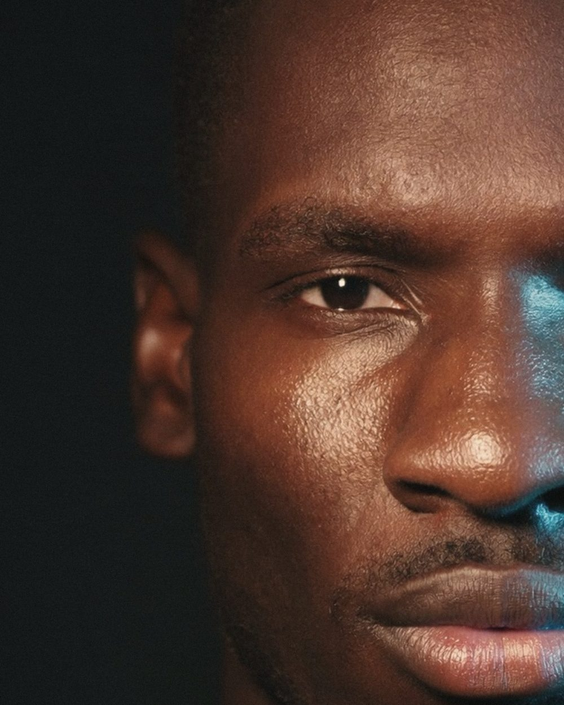
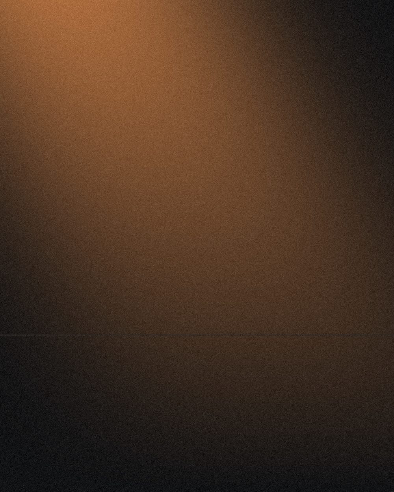
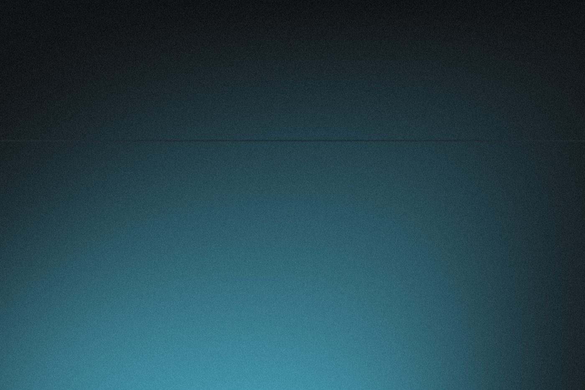
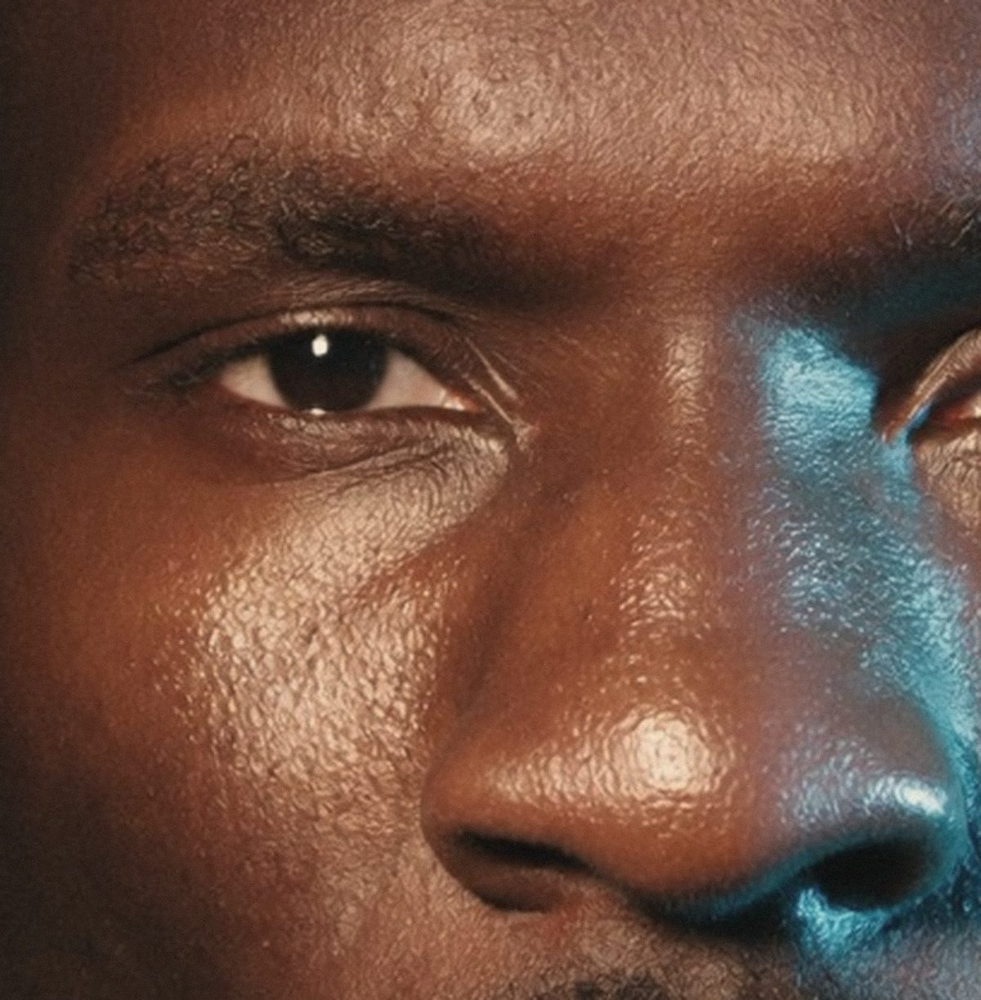
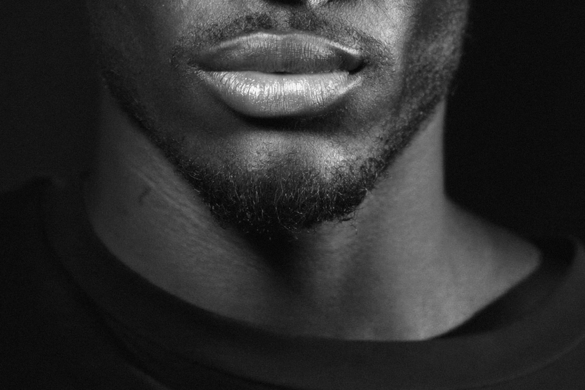

Selected Works
Explore by Style

Placeholder, warm half
Placeholder, amber light study Placeholder, mono contrast study
Placeholder, mono contrast study
Placeholder, cyan light study
Placeholder, warm eye
Placeholder, mono jaw studyAbout Me
A short biography will appear here soon.
Contact
Contact details will appear here soon.